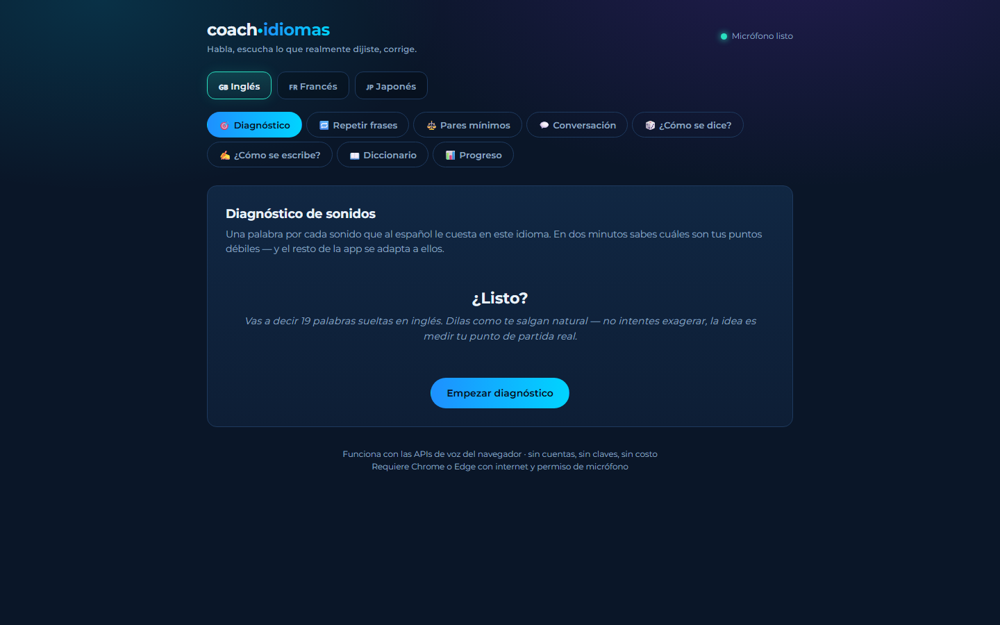

01 · Interfaz tecnológica
01 · Interfaz tecnológicaDinámica · inmersiva · visual
Opción 1
Tarjetas amplias, colores de acento y capturas al frente. Pensada para causar impacto y guiar al visitante a cada producto.
Explorar esta propuesta ↗Dos maneras de explorar el trabajo de Wallpari
El mismo catálogo de sistemas, aplicaciones y soluciones, presentado en dos estilos visuales.
01 · Interfaz tecnológicaDinámica · inmersiva · visual
Tarjetas amplias, colores de acento y capturas al frente. Pensada para causar impacto y guiar al visitante a cada producto.
Explorar esta propuesta ↗
02 · Archivo técnicoEditorial · ordenada · densa
Un archivo numerado con rubro, formato y tecnologías a simple vista. Pensada para comparar un catálogo amplio.
Explorar esta propuesta ↗Ambas propuestas contienen los mismos proyectos y se adaptan a celular y computadora.